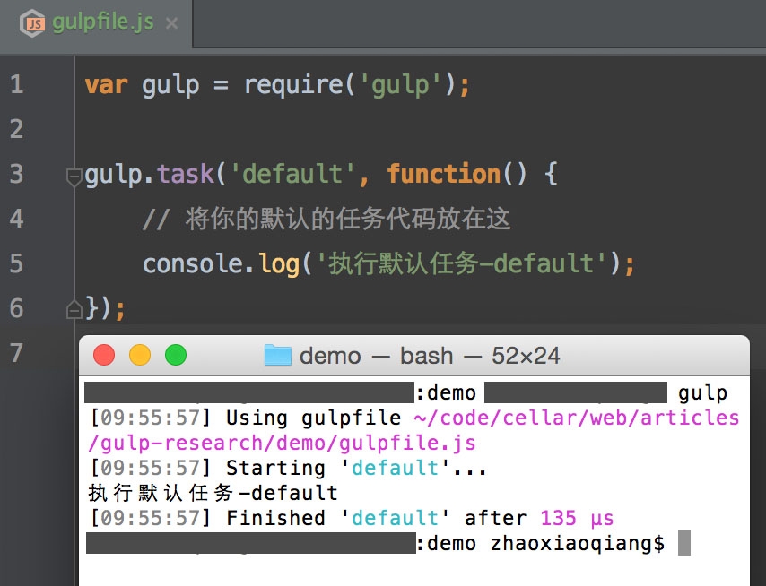

我也来学学这个新玩意。
全局安装(只有全局安装的包才可以直接使用命令行)：
$ npm install --global gulp
然后添加文件 gulpfile.js，在此文件所在的文件夹下运行命令 gulp，截图如下：

局部安装
$ npm install gulp
如果只局部安装，通过下面命令也可以运行，原理参见另一篇文章npm。
./node_modules/gulp/bin/gulp.js
还需要安装各种插件，这样普通的合并压缩任务才能进行
npm install gulp-minify-css gulp-uglify gulp-concat gulp-rename gulp-jshint --save-dev
只有四个方法，详细解释参见gulp API：
gulpfile.js 文件中的default任务在没有参数的时候被调用，一般会在default中以 gulp.start 的方式调用全部任务。也可以在命令行单独执行某个任务，如 gulp MinCSS。
// 任务入口
gulp.task('default', function() {
console.log('default任务开始');
gulp.start(['MinCSS']);
});
// 合并压缩CSS
gulp.task('MinCSS', function () {
// 处理任务的代码
});
gulp的任务都是异步执行的，如果一个任务依赖另一个，需要配置依赖。下面是官网上的例子：
var gulp = require('gulp');
// 返回一个 callback，因此系统可以知道它什么时候完成
gulp.task('one', function(cb) {
// 做一些事 -- 异步的或者其他的
cb(err); // 如果 err 不是 null 或 undefined，则会停止执行，且注意，这样代表执行失败了
});
// 定义一个所依赖的 task 必须在这个 task 执行之前完成
gulp.task('two', ['one'], function() {
// 'one' 完成后
});
gulp.task('default', ['one', 'two']);
在 github 上可以找到相关Demo。
纯css按文件顺序合并压缩
var gulp = require('gulp');
var minifycss = require('gulp-minify-css');
var concat = require('gulp-concat');
var rename = require('gulp-rename');
gulp.task('default', ['MinCSS']);
// 合并压缩CSS-1
gulp.task('MinCSS', function () {
var outPutFolder = 'asset/css';
gulp.src('css-1/*.css')
.pipe(concat('all.css'))
.pipe(gulp.dest(outPutFolder))
.pipe(minifycss())
.pipe(rename('all-min.css'))
.pipe(gulp.dest(outPutFolder));
});
通过import文件合并压缩
@import url(a.css);
@import url(b.css);
一些项目会把所有的css通过一个import文件包含进去，方便页面引用和某些打包工具，一些老项目迁移gulp时需要一些技巧。
// 合并压缩CSS-2
gulp.task('MinCSS', function () {
var outPutFolder = 'asset/css';
gulp.src('css-2/import.css')
.pipe(minifycss())
.pipe(rename('all-min.css'))
.pipe(gulp.dest(outPutFolder));
});
这个方法只能得到合并压缩后的css，有一个额外的好处是可以控制css文件的合并顺序。如果需要合并不压缩的文件，通过文件排除技巧来实现。
gulp.task('MinCSS', function () {
var outPutFolder = 'asset/css';
gulp.src(['css-2/!(import)*.css'])
.pipe(concat('all.css'))
.pipe(gulp.dest(outPutFolder));
});
移动图片